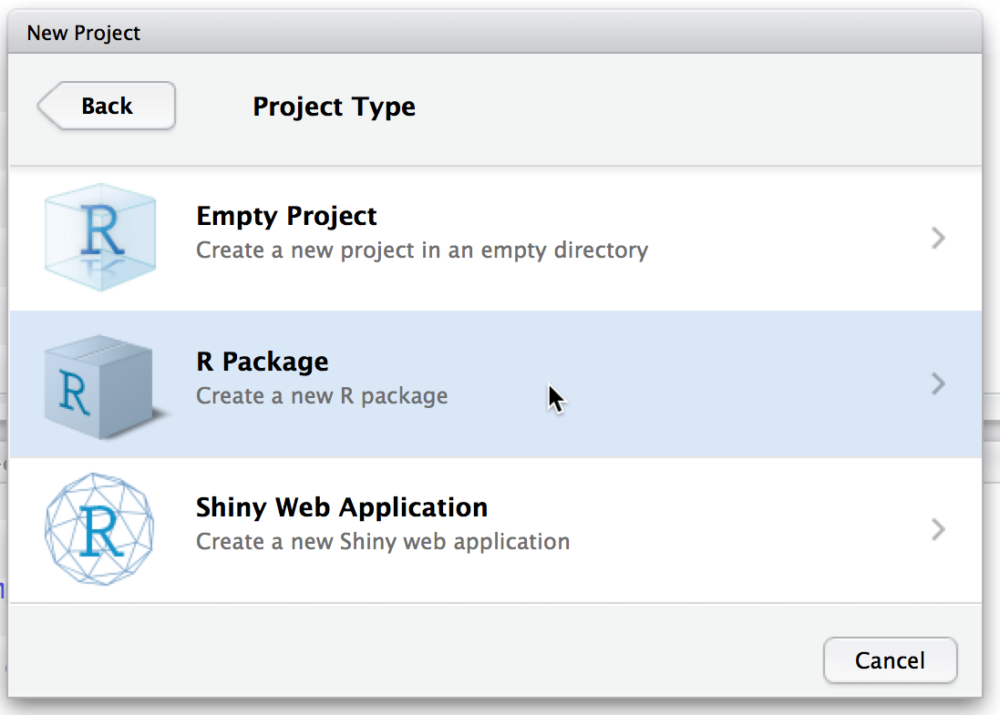
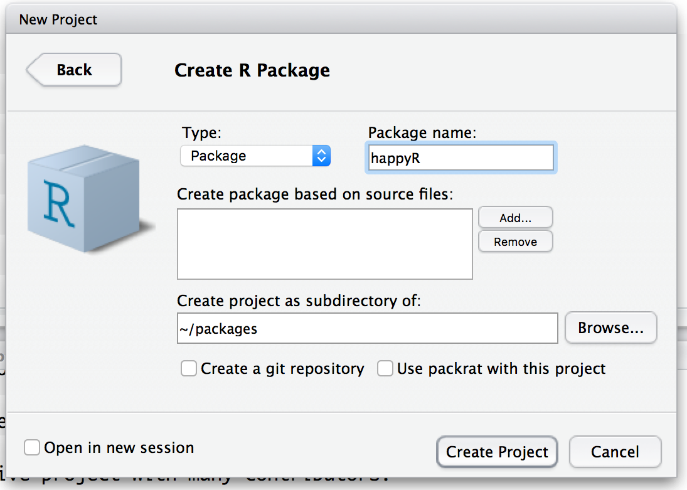
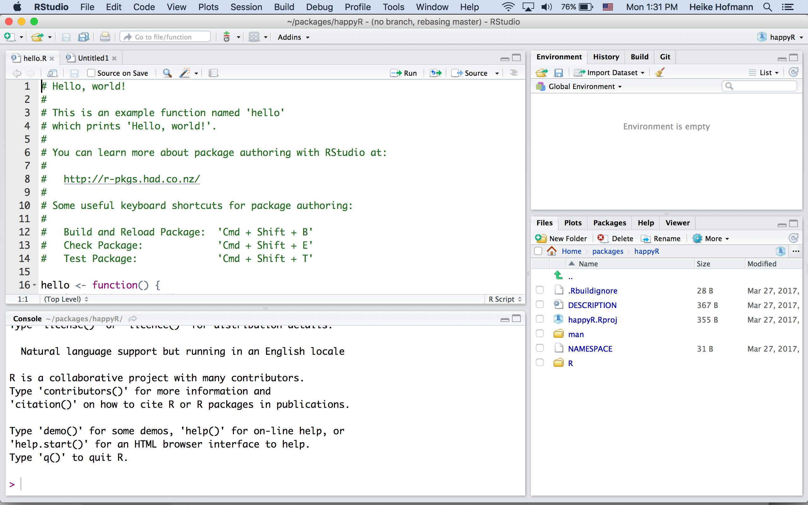

RStudio and R packages
RStudio supports creating new packages. Follow the dialogs through New Project ...

Heike Hofmann
Resource: R packages by Hadley Wickham
RStudio supports creating new packages. Follow the dialogs through New Project ...
RStudio supports creating new packages. Follow the dialogs through New Project ...

RStudio supports creating new packages. Follow the dialogs through New Project ...


Within folder that has the same name as your R package:
R code files go into the folder R, data sets go into the folder data, Rd files contain documentation and go into man
plain text file with all the meta information on a package
Package: happyR
Type: Package
Title: What the Package Does (Title Case)
Version: 0.1.0
Author: Who wrote it
Maintainer: The package maintainer <yourself@somewhere.net>
Description: More about what it does (maybe more than one line)
Use four spaces when indenting paragraphs within the Description.
License: What license is it under?
Encoding: UTF-8
LazyData: true\name{hello}
\alias{hello}
\title{Hello, World!}
\usage{
hello()
}
\description{
Prints 'Hello, world!'.
}
\examples{
hello()
}The Rd files are clearly structured, yet, we DO NOT want to write these ourselves (way too many places to mess up)
devtools::document() (or press Ctrl/Cmd + Shift + D in RStudio) to convert roxygen comments to .Rd files.?.Roxygen comments start with #' to distinguish them from regular comments:
#' Add together two numbers.
#'
#' @param x A number.
#' @param y A number.
#' @export
#' @return The sum of \code{x} and \code{y}.
#' @examples
#' add(1, 1)
#' add(10, 1)
add <- function(x, y) {
x + y
}@export does not write anything into the help file - instead it writes a line into NAMESPACE and makes the function visible to package users.
add.Rd% Generated by roxygen2 (4.0.0): do not edit by hand
\name{add}
\alias{add}
\title{Add together two numbers}
\usage{
add(x, y)
}
\arguments{
\item{x}{A number}
\item{y}{A number}
}
\value{
The sum of \code{x} and \code{y}
}
\description{
Add together two numbers
}
\examples{
add(1, 1)
add(10, 1)
}hello()?hellohello.Rd in the folder manhello() in the file hello.R to create the same help for hello as was there before.devtools::document() to create the file hello.Rd.?hello.hello to produce an output of Hello, string! for hello(string). Update ?hello accordingly.data folder using the command save.#' Prices of 50,000 round cut diamonds.
#'
#' A dataset containing the prices and other attributes of almost 54,000
#' diamonds.
#'
#' @format A data frame with 53940 rows and 10 variables:
#' \describe{
#' \item{price}{price, in US dollars}
#' \item{carat}{weight of the diamond, in carats}
#' ...
#' }
#' @source \url{http://www.diamondse.info/}
"diamonds"